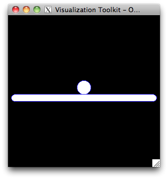
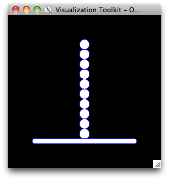

Philosophy¶
The point of the preprocessor is the generation of a simulation case. It allows to define an avatar of a body (a numerical model) in a self content way so that LMGC90’s software will have all needed data to simulate its behaviour. Furthermore, within the preprocessor it is possible to copy, translate or rotate any avatar or container of avatars.
Model and Material definition¶
Models are necessary to define which physics is considered. Material contains physical parameters necessary to simulate a model.
Example:
mod = pre.model(name='rigid', physics='MECAx', element='Rxx2D', dimension=2)
mat = pre.material(name='TDURx', materialType='RIGID', density=1000.)
mut = pre.material(name='TMOUx', materialType='RIGID', density=100.)
For a model, the input parameters are:
‘name’: a 5 characters string of your choice
‘physics’: either ‘MECAx’, ‘THERx’, ‘POROx’ or ‘MULTI’.
‘element’: for rigids ‘Rxx2D’ or ‘Rxx3D’, there is number of other keyword for meshes
‘dimension’: 2 or 3 (as an integer)
For a material, the input parameters are:
‘name’: a 5 characters string of your choice
‘materialType’: ‘RIGID’ for rigids, otherwise a keyword specifying the behaviour law of the material
after that there are a bunch of parameters which depend on the ‘materialType’ value.
Avatar definition¶
As previously told an avatar is a numerical representation
of a physical object. There are a lot of ways to create avatars, in this
basic presentation, two generators will be used:
one to create a disk:
rigidDisk()one to create a foundation:
rigidJonc()
It is to be noted that to generate a rigid avatar, fitting model and material objects must be provided:
Example:
{kind=link}
radius = 0.1
disk = pre.rigidDisk(r=radius, center=[0.,0.1], model=mod, material= mat, color='BLUEx')
floor= pre.rigidJonc(axe1=1., axe2=0.05, center=[0.,-0.05], model=mod, material=mat, color='BLUEx')
To impose initial values to degrees of freeedom of an avatar use: avatar.imposeInitValue.
To impose driven degrees of freedom of an avatar use: avatar.imposeDrivenDof.
Floor boundary condition:
floor.imposeDrivenDof(component=[1,2,3], dofty='vlocy')
The functions used to generate the two rigid avatars (disk and floor) are based on set of lower functions allowing more fine-tune generation. The intested reader can read the Avatar generation section.
Containers¶
Since several model, material, avatar, etc need to be defined some storage mechanism are necessary.
Instead of using Python list of objects pylmgc90.pre built-in containers
are defined. Available containers are: models, materials, avatars.
Some containers are also hidden in an avatar: nodes, bulks and contactors.
Example:
mods = pre.models()
mods.addModel(mod)
#
mats = pre.materials()
mats+=mat
mats.addMaterial(mut)
#
bodies = pre.avatars()
bodies.addAvatar(disk)
bodies+=floor
Basic operations¶
The methods avatar.translate and avatar.rotate allow to translate and
rotate respectively an avatar. To duplicate an avatar, be sure to use deep copy and not shallow copy.
The translation and rotation can be applied to a whole container of avatars.
Example:
{kind=link}
Column creation:
import copy
nb_disks = 10
column = pre.avatars()
for i in range(nb_disks):
new_disk = copy.deepcopy(disk)
new_disk.translate(dy=i*2.*radius)
column.addAvatar(new_disk)
{kind=link}
Columns creation and adding to avatar container:
bodies = pre.avatars()
nb_columns = 3
for i in range(nb_columns):
new_column = copy.deepcopy(column)
new_column.translate(dx=i*2.*radius)
bodies += new_column
{kind=link}
Adding floor an rotating it:
bodies.addAvatar(floor)
bodies.rotate(description='axis', center=numpy.array([1.,-0.05]), axis=[0.,0.,1.], alpha=-math.pi/6.)
See this file for the complete generation script.
The example shows how to generate a simple 2D rigid case. This small set of functions allows a lot
of things already. But it becomes boring to always have to redefine some common behaviours when generating
a lot of samples. That is why some common operations are already implemented using those basic features.
Avatar generation¶
An avatar is first defined by its geometrical discretization:
a set of nodes: center of inertia for a rigid body, nodes of the mesh for a meshed body (see
node),a list of geometrical elements connected to nodes. A rigid model is defined by only one element attached to its only node (center of inertia).
Example:
disk = pre.avatar(dimension=2)
no = pre.node(coor=numpy.array([0.,0.1]),number=1 )
disk.addNode( no )
disk.addBulk( pre.rigid2d() )
Once the nodes and elements are defined for an avatar, groups of element must be defined. There is always at least
one group called ‘all’ which contained all the elements. This notion of group is inherited from the mesh manipulation
and appears for rigid avatars for consistency’s sake. Thus the avatar.defineGroups method should always
be called.
Modeling properties are then defined:
list of bulk elements: element with a given material and a model (see
bulk),list of contactors: a basic shape attached to some geometrical element such as the center of gravity for a rigid object or a patch of linear/surfacic elements for a deformable one (see
contactor),initial or driven values of degrees of freedom may be defined.
Example:
Disk creation:
import numpy
radius = 0.1
disk = pre.avatar(dimension=2)
disk.addNode( pre.node(coor=numpy.array([0.,0.1]),number=1) )
disk.addBulk( pre.rigid2d() )
disk.defineGroups()
disk.defineModel(model=mod)
disk.defineMaterial(material=mut)
disk.addContactors(shape='DISKx', color='BLUEx', byrd=radius)
disk.computeRigidProperties()
Foundation creation:
floor = pre.avatar(dimension=2)
floor.addNode( pre.node(coor=numpy.array([0.,-0.05]),number=1) )
floor.addBulk( pre.rigid2d() )
floor.defineGroups()
floor.defineModel(model=mod)
floor.defineMaterial(material=mat)
floor.addContactors(shape='JONCx', color='BLUEx', axe1=1., axe2=0.05)
floor.computeRigidProperties()
Floor boundary condition:
floor.imposeDrivenDof(component=[1,2,3],dofty='vlocy')
Note that for rigids (as other models), the
avatar.defineGroups method must be called in order to be
able to add model, material, contactors, etc.
When a rigid body defined without giving precision on volume or
inertia, a call to avatar.computeRigidProperties is also
necessary once the model and material are defined.
Some basic features, like imposing initial or driven values of degrees of freedom, can be applied to a set of
nodes thanks to their group name. To impose initial values to degrees of freeedom of an avatar use: avatar.imposeInitValue.
To impose driven degrees of freedom of an avatar use: avatar.imposeDrivenDof